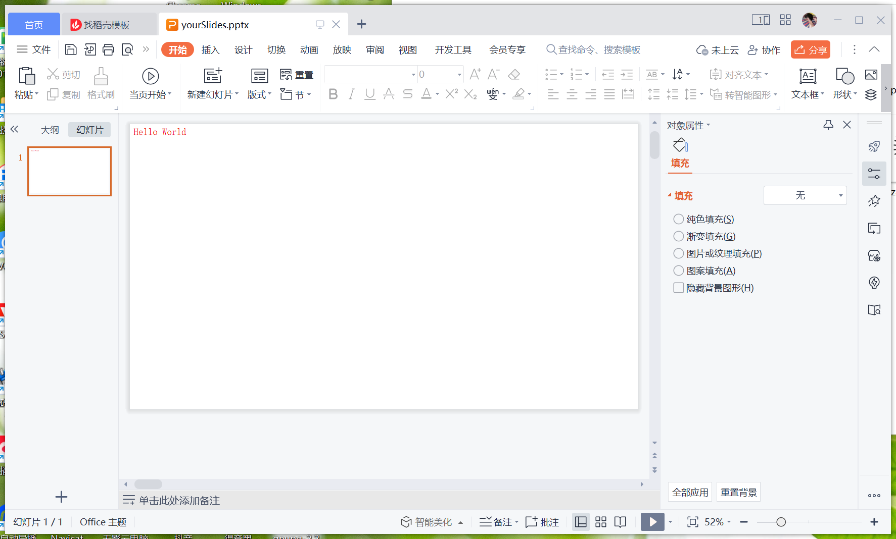
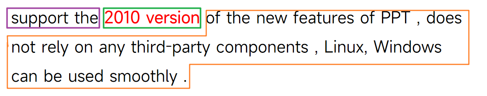

介绍
兄dei，要不要考虑下请我喝杯咖啡！
微信扫码打赏哦~

PPTShow是一款开源免费的Java生成PPT工具包。
它在任意系统上完全不依赖其他程序的情况下能够帮助用户使用代码生成PPT文件。
但是PPT生成图片、PPT生成视频功能是通过调用微软Office实现，所以仅在Windows下可用。
我们支持
- 在PPT中添加页面；
- 在页面中添加文本、图形、线段、图片；
- 文本支持分段落文本，支持同一行中出现多种样式的文本；
- 支持背景音乐；
- 支持PPT页面背景样式设置；
- 支持元素和页面动画，元素动画支持顺序调整和时刻设置；
- 支持常见的元素样式设置；
- 在Windows环境下支持PPT转视频和PPT转图片（请确保已经安装并激活微软Office）
我们不支持
-
只能生成pptx文件，不支持生成ppt文件
-
不推荐使用PPTShow读取PPT文件（读取目前还处于demo状态，不适合生产环境使用）
-
暂不支持表格元素
TODO
我们目前计划中还未开发的有：
- 表格元素支持
- 嵌入字体支持
常见问题
Q：是否可以用于商业用途？
A：PPTShow遵循 Apache License 2.0 开源协议允许使用者用于包括但不限于商业使用、个人学习使用的使用用途
Q：是否可以在Linux环境生成PPT文档？
A：支持
Q：PPT生成图片是否会出现中文乱码或者字体变默认情况？
A：不会出现，我们生成图片是调用的系统Office生成，所以无需担心类似问题
Q：是否可以设置元素动画顺序？
A：支持设置顺序，且支持同时出现、上一个动画完成后出现等常见的操作
Q：PPTShow是否保证可用性或者对因代码问题导致的损失负责？
A：PPTShow不对项目进行可用性保证，也不对任何损失负责，请开发者使用前自行测试功能
快速开始
本教程会引导您通过Java代码生成一个包含HelloWorld的PPT文件
引入Jar
您可以通过maven或者手动导入的方式引入jar包
Maven坐标【推荐】
<dependency>
<groupId>cc.pptshow</groupId>
<artifactId>pptshow</artifactId>
<version>1.3</version>
</dependency>
下载并手动导入【不推荐】
下载地址：https://s01.oss.sonatype.org/service/local/repositories/releases/content/cc/pptshow/pptshow/1.3/pptshow-1.3.jar
编写代码
新建一个名为 Main 的 Java class 文件，
将下面的代码拷贝到项目中之后运行，
你就获得了包含HelloWorld的PPT文件！
import cc.pptshow.ppt.domain.*;
import cc.pptshow.ppt.element.impl.*;
import cc.pptshow.ppt.show.PPTShow;
import cc.pptshow.ppt.show.PPTShowSide;
public class Main {
public static void main(String[] args) {
//新建一个PPT对象
PPTShow pptShow = PPTShow.build();
//新建一页PPT
PPTShowSide side = PPTShowSide.build();
//创建一个行内文本对象，文字设定为Hello World
PPTInnerText pptInnerText = PPTInnerText.build("Hello World");
//创建一个行内文本样式对象，让文本颜色为红色
PPTInnerTextCss pptInnerTextCss = PPTInnerTextCss.build().setColor("FF00000");
//绑定行内文本和样式对象
pptInnerText.setCss(pptInnerTextCss);
//通过行内文本创建一个行文本对象，并通过行文本对象创建文本对象
PPTText pptText = PPTText.build(PPTInnerLine.build(pptInnerText));
//在PPT页面中添加文本对象
side.add(pptText);
//在PPT里面添加PPT页面
pptShow.add(side);
//输出到文件
pptShow.toFile("C:/Users/qrp19/Desktop/test4.pptx");
}
}
生成文件
如果顺利的话，您会获得类似下图的文件

入门教程
核心思想
PPTShow不同于常见的POI等PPT生成程序，PPTShow几乎完全屏蔽了PPT本身底层的XML代码。
PPTShow认为每一个不可再分的小元素都是一个对象，不同层级的对象间互相嵌套形成了整个PPT。
比如下图所示，我们认为PPT的整体、不同页面、页面中的各种元素都是一个对象。
每个元素对象都有一个对应的样式表对象，通过 元素对象.setCss(样式表对象) 的方式就可以实现样式的绑定。
| 元素对象 | 元素含义 | 样式表对象 |
|---|---|---|
| PPTShowSide | PPT页面 | PPTSideCss |
| PPTImg | PPT图片 | PPTImgCss |
| PPTShape | PPT图形 | PPTShapeCss |
| PPTLine | PPT线段 | PPTLineCss |
| PPTText | PPT文本 | PPTTextCss |
| PPTInnerLine | PPT文本中的段落 | PPTInnerLineCss |
| PPTInnerText | PPT文本段落中的一个样式最小单元 | PPTInnerTextCss |
注意事项
- PPTShow对象使用完需要手动调用
close()方法以删除临时文件 - 本项目所有元素对象和样式表对象均实现了
cloneable接口，且均为深克隆
PPT文件对象——PPTShow
PPTShow对象代表一个PPT文件，系统会在临时目录构建有关文件的必要组成部分，并在用户指定输出的时候将拼合好的文件输出到指定的位置。
因此您必须手动执行关闭操作，以删除临时目录文件，否则临时目录文件越堆越多可能导致磁盘空间不足。
创建PPTShow
您可以通过以下两种方式创建一个PPTShow对象，它们没有任何差别。
PPTShow pptShow = PPTShow.build();
PPTShow pptShow = new PPTShow();
插入一张PPT
PPTShowSide是PPT页面对象，在后面的文档中会有提到。
插入到文档页面末尾：
void add(PPTShowSide pptShowSide)
插入到文档中间某一页：
/**
* indexId 表示要插入指定页面的索引，索引从0开始
*/
void add(PPTShowSide pptShowSide, int indexId)
生成文件
根据PPTShow内容，生成一个pptx格式的PPT文件
/**
* path 输出路径，请以.pptx结尾
*/
void toFile(String path)
关闭对象
关闭对象后缓存将被清理，被关闭的对象无法生成文件
void close()
PPT页面对象——PPTShowSide
PPT页面对象表示一个PPT的页面，一个页面中通常由很多元素组成，很多个页面组成了PPT
创建对象
您可以通过以下两种方式创建一个PPTShowSide对象，它们没有任何差别。
PPTShowSide pptShowSide = PPTShowSide.build();
PPTShowSide pptShowSide = new PPTShowSide();
添加元素
元素遵循索引小的元素在下层，索引大的元素在上层
追加一个元素
void add(PPTElement pptElement)
添加一个索引为指定id的元素
/**
* indexId 表示要插入指定页面的索引，索引从0开始
*/
void add(PPTElement pptElement, int indexId)
将List中全部元素都添加进来
void addAll(List<PPTElement> pptElements)
读取元素列表
通过Get方法读取当前元素列表信息
List<PPTElement> getElements()
修改或读取背景音乐
您可以通过 backgroundMusic 属性 来设置幻灯片的背景音乐
目前仅支持播放到幻灯片结束放映，暂时不支持指定到哪一张幻灯片结束
/**
* 背景音乐文件
*/
@Getter
@Setter
private String backgroundMusic;
设定页面自动换页
您可以通过 autoPagerTime 属性 设置当前幻灯片自动切换到下一页的时间
单位：毫秒，默认为0，表示不会自动换页
/**
* 自动换页面的时间
* 单位毫秒，默认为0表示不会自动换页
*/
@Getter
@Setter
private long autoPagerTime = 0L;
设置切换动画
您可以通过设置 pageSwitchingType 来设定幻灯片切换的动画效果
默认为切出效果（也就是没有任何样式，直接硬切换）
private PageSwitchingType pageSwitchingType = PageSwitchingType.DEFAULT;
设定值对应枚举类 PageSwitchingType
枚举类中包含了幻灯片的动作样式中文名（参数1），您可以自行对照或测试使用。
DEFAULT("切出（默认效果）", PageSwitchingType.DEFAULT_XML),
SMOOTH("平滑", PageSwitchingType.SMOOTH_XML),
FADE_OUT("淡出", PageSwitchingType.FADE_OUT_XML),
ERASE("擦除", PageSwitchingType.ERASE_XML),
SHAPE("形状", PageSwitchingType.SHAPE_XML),
DISSOLVE("溶解", PageSwitchingType.DISSOLVE_XML),
NEWS_FLASH("新闻快报", PageSwitchingType.NEWS_FLASH_XML),
SPOKES("轮辐", PageSwitchingType.SPOKES_XML),
BLIND("百叶窗", PageSwitchingType.BLIND_XML),
COMB("梳理", PageSwitchingType.COMB_XML),
TAKING("抽出", PageSwitchingType.TAKING_XML),
SEGMENTATION("分割", PageSwitchingType.SEGMENTATION_XML),
LINE("线条", PageSwitchingType.LINE_XML),
BOARD("棋盘", PageSwitchingType.BOARD_XML),
LAUNCH("推出", PageSwitchingType.LAUNCH_XML),
INSERT("插入", PageSwitchingType.INSERT_XML),
PAGE_CURLING("页面卷曲", PageSwitchingType.PAGE_CURLING_XML),
CUBE("立方体", PageSwitchingType.CUBE_XML),
BOX("框", PageSwitchingType.BOX_XML),
PLAIN("飞机", PageSwitchingType.PLAIN_XML),
OPEN_DOOR("开门", PageSwitchingType.OPEN_DOOR_XML),
STRIPPING("剥离", PageSwitchingType.STRIPPING_XML),
RANDOM("随机", PageSwitchingType.RANDOM_XML)
PPT图片——PPTImg
PPTImg对象表示PPT中的图片元素
创建PPTImg
您可以通过以下两种方式创建一个PPTImg对象，它们没有任何差别。
PPTImg pptImg = PPTImg.build();
PPTImg pptImg = new PPTImg();
您也可以在创建的时候指定图片，有两种方式可以创建PPTImg对象，它们没有任何差别
PPTImg pptImg = PPTImg.build(String file);
PPTImg pptImg = new PPTImg(String file);
设置图片
设置当前PPTImg对象对应的图片是什么，你可以在创建对象的时候直接指定，您也可以在创建后手动调用下面的方法指定嵌入图片路径。
支持 png、jpg、gif、svg；不支持webp格式
注意：仅支持本地文件绝对路径，不支持如http开头的在线图片信息！
PPTImg setFile(String file)
读取图片路径
获取PPTImg对象的图片路径
String getFile()
设定样式
您可以通过 css 属性来设置样式信息，接下来我们将详细讲解 PPTImgCss 属性及含义。
@Getter
@Setter
private PPTImgCss css;
PPTImgCss
PPTImg 对应的样式表对象
left
private double left;
距离页面左边距离，单位cm
top
private double top;
距离页面顶边距离，单位cm
width
private double width;
元素宽度，单位cm
height
private double height;
元素高度，单位cm
cutting
private Cutting cutting;
裁剪样式，请参考【参考文档】-【通用样式】-【Cutting裁剪】
border
private Border border;
边框样式，请参考【参考文档】-【通用样式】-【border边框】
shadow
private Shadow shadow;
边框样式，请参考【参考文档】-【通用样式】-【shadow阴影】
name
private String name = "图片";
元素名称，默认为 “图片”，正常放映PPT时看不到此信息
在设置元素动画等场景下，会在动画窗格里展示元素名称信息
在同一页幻灯片中允许出现重复name
describe
private String describe = "image";
元素描述，默认为 “image”，正常放映PPT时看不到此信息
在同一页幻灯片中允许出现重复describe
angle
private double angle;
旋转角度，指顺时针旋转角度，默认为0表示不旋转。
合法取值范围：0 ≤ angle ＜ 360
removeColor
private String removeColor;
设置透明色，格式为16进制6字符表示的颜色值，不带 # 号，例：FFFFFF 。
比如白底图可以设置为白色；此属性对png图片无效
PPT图形——PPTShape
PPTShape对象表示PPT中的图形元素
创建PPTShape
您可以通过以下两种方式创建一个PPTImg对象，它们没有任何差别。
PPTShape pptShape = PPTShape.build();
PPTShape pptShape = new PPTShape();
设定样式
您可以通过 css 属性来设置样式信息，接下来我们将详细讲解 PPTImgCss 属性及含义。
@Getter
@Setter
private PPTShapeCss css;
PPTShapeCss
PPTShape 对应的样式表对象
shape
private Shape shape = new Rect();
图形形状，如果您没有做特殊设置，将默认是直角矩形。
Shape是一个抽象类，有以下图形实现了它：

Rect 直角矩形
直角矩形没有更多可供设置的参数
当且仅当设定width和height相同的时候展示为正方形
Ellipse 椭圆
椭圆形没有更多可供设置的参数
当且仅当设定width和height相同的时候展示为正圆形
RoundRect 圆角矩形
可以通过get和set方法设置圆角范围参数，允许的范围是0 - 50，表示0%-50%
private double fillet;

Parallelogram 平行四边形
可以通过get和set方法设置平行四边形的倾斜程度，允许的范围是0-100，表示0% - 100%
private double fillet;

SelfShape 自定义图形
系统未实现的图形临时解决方案，不推荐使用
/**
* 用户自己定义的一段XML
*/
private String custGeom;
用户自定义一段XML来确定图形信息，内容会直接写入文件，不会进行除非空外的任何合法性校验
left
private double left;
距离页面左边距离，单位cm
top
private double top;
距离页面顶边距离，单位cm
width
private double width;
元素宽度，单位cm
height
private double height;
元素高度，单位cm
background
private Background background;
背景样式，请参考【参考文档】-【通用样式】-【background背景】
border
private Border border;
边框样式，请参考【参考文档】-【通用样式】-【border边框】
name
private String name = "图片";
元素名称，默认为 “图形”，正常放映PPT时看不到此信息
在设置元素动画等场景下，会在动画窗格里展示元素名称信息
在同一页幻灯片中允许出现重复name
angle
private double angle;
旋转角度，指顺时针旋转角度，默认为0表示不旋转。
合法取值范围：0 ≤ angle ＜ 360
flipX
private boolean flipX;
是否进行水平翻转，默认不进行翻转
flipY
private boolean flipY
是否进行垂直翻转，默认不进行翻转
PPT线段——PPTLine
PPTLine表示PPT中的线段元素
创建PPTLine
您可以通过以下方式创建一个PPTLine对象
PPTLine pptLine = new PPTLine();
设定样式
您可以通过 css 属性来设置样式信息，接下来我们将详细讲解 PPTImgCss 属性及含义。
@Getter
@Setter
private PPTLineCss css;
PPTLineCss
PPTLine 对应的样式表对象
left
private double left;
距离页面左边距离，单位cm
top
private double top;
距离页面顶边距离，单位cm
color
private String color = "333333";
线段颜色，16进制颜色，不带 # 号
默认为 333333
lineWidth
private double lineWidth = 0.5;
线段的宽度，单位磅，默认0.5磅

width
private double width;
元素宽度，单位cm，竖线宽度必须设为0

height
private double height;
元素高度，单位cm，横线高度必须设为0
type
private LineType type = LineType.LINE;
线段的方向，默认线段从左上角的顶点连接到右下角的顶点
如果需要从右上角连接到左下角，请设置参数为：LineType.TOP_RIGHT_BOTTOM_LEFT

PPT文本——PPTText
PPTText表示PPT文本元素，注意是文本元素整体，而非其中的一部分，比如下图中的虚线框区域就是一个PPT文本

如果我们希望在一个PPTText对象中包含不同段落，如上图效果，其中包含了两个段落，分别是：PPTShow is a free open source Java native generation of PPT toolkit. 和 support the 2010 version of the new features of PPT , does not rely on any third-party components , Linux, Windows can be used smoothly .
其中每一个段落都是一个 PPTInnerLine 对象。
段落中还可能存在多种文本呈现样式，它们紧密挨在一起，没有换行。
比如 2010 version 和前后文本就存在差异，此时相当于一个 PPTInnerLine对象包含了三个 PPTInnerText 对象，其中第一个和第三个样式相同，第二个有加粗和红色特殊效果。（如下图所示，每个线框部分都代表一个 PPTInnerText 对象）

创建PPTText
您可以通过以下方式创建一个PPTText对象，两种方式没有任何差别：
PPTText pptText = new PPTText();
PPTText pptText = PPTText.build();
您还可以在创建的时候直接绑定PPTInnerLine对象集合：
只有一个PPTInnerLine时，可以使用以下方式创建 PPTText 对象，两种方式没有任何差别：
PPTText pptText = new PPTText(PPTInnerLine line);
PPTText pptText = PPTText.build(PPTInnerLine line);
有多个的时候，可以使用以下方式创建 PPTText 对象，两种方式没有任何差别：
PPTText pptText = new PPTText(List<PPTInnerLine> lineList);
PPTText pptText = PPTText.build(List<PPTInnerLine> textList);
你还可以在创建的时候直接绑定样式文件：
PPTText pptText = new PPTText(PPTInnerLine line, PPTTextCss css);
PPTText pptText = PPTText.build(PPTInnerLine line, PPTTextCss css);
PPTText pptText = new PPTText(List<PPTInnerLine> lineList, PPTTextCss css);
PPTText pptText = PPTText.build(List<PPTInnerLine> textList, PPTTextCss css);
获取最小宽度
double findMinWidthSize()
在每一个段落都不折行的情况下，最小需要的宽度
获取最小高度
double findMinHeightSize()
获取当前宽度下，最小需要的高度值。
实际上即便是设定的样式中高度比最小高度小，文本也会自动溢出显示，不会影响展示。
获取全部文本
String findAllText()
获取文本对象所有段落、所有段落内文本中的全部文本信息。
返回信息包含换行符，可以用换行符区分段落信息，但段落内文本无法区分出来。
举例：

上图 PPTText 对象调用 findAllText() 方法后会获得如下文本：
PPTShow is a free open source Java native generation of PPT toolkit.
support the 2010 version of the new features of PPT.
添加段落
在结尾处追加一个段落：
PPTText add(PPTInnerLine text)
在结尾处追加多个段落：
PPTText addAll(Collection<PPTInnerLine> text)
您也可以直接取出段落List对象自行修改操作，支持get和set操作
@Setter
@Getter
private List<PPTInnerLine> lineList = Lists.newArrayList();
设定样式
您可以通过 css 属性来设置样式信息，接下来我们将详细讲解 PPTTextCss 属性及含义。
@Getter
@Setter
private PPTTextCss css;
PPTTextCss
PPTText 对应的样式表对象
left
private double left;
距离页面左边距离，单位：cm
top
private double top;
距离页面顶边距离，单位：cm
width
private double width;
元素宽度，单位：cm，默认为最小宽度
height
private double height;
元素高度，单位：cm，默认为最小高度
lineHeight
private double lineHeight;
行高，单位：倍行距，默认为1
background
private Background background
背景样式，请参考【参考文档】-【通用样式】-【background背景】
angle
private double angle;
旋转角度，指顺时针旋转角度，默认为0表示不旋转。
合法取值范围：0 ≤ angle ＜ 360
name
private String name = "文本";
元素名称，默认为 “文本”，正常放映PPT时看不到此信息
在设置元素动画等场景下，会在动画窗格里展示元素名称信息
在同一页幻灯片中允许出现重复name
PPT文本中的段落——PPTInnerLine
有关 PPTText 、 PPTInnerLine、PPTInnerText的关系，请参考PPTText的文档
创建PPTInnerLine
您可以通过以下方式创建一个PPTInnerLine对象，两种方式没有任何差别：
PPTInnerLine pptInnerLine = new PPTInnerLine();
PPTInnerLine pptInnerLine = PPTInnerLine.build();
您还可以直接快速创建空行对象：
PPTInnerLine pptInnerLine = PPTInnerLine buildEmptyLine();
/**
* num：空几行
*/
PPTInnerLine pptInnerLine = PPTInnerLine buildEmptyLine(int num);
您还可以在创建的时候直接绑定PPTInnerText对象集合：
只有一个PPTInnerText时，可以使用以下方式创建 PPTInnerLine 对象，两种方式没有任何差别：
PPTInnerLine pptInnerLine = new PPTInnerLine(PPTInnerText text);
PPTInnerLine pptInnerLine = PPTInnerLine.build(PPTInnerText text);
有多个的时候，可以使用以下方式创建 PPTInnerLine 对象，两种方式没有任何差别：
PPTInnerLine pptInnerLine = new PPTInnerLine(List<PPTInnerText> textList);
PPTInnerLine pptInnerLine = PPTInnerLine.build(List<PPTInnerText> textList);
你还可以在创建的时候直接绑定样式文件：有任何差别：
PPTInnerLine pptInnerLine = new PPTInnerLine(PPTInnerText text, PPTInnerLineCss css);
PPTInnerLine pptInnerLine = PPTInnerLine.build(PPTInnerText text, PPTInnerLineCss css);
PPTInnerLine pptInnerLine = new PPTInnerLine(List<PPTInnerText> textList, PPTInnerLineCss css);
PPTInnerLine pptInnerLine = PPTInnerLine.build(List<PPTInnerText> textList, PPTInnerLineCss css);
添加段内文本
在结尾处追加一个段落：
PPTInnerLine add(PPTInnerText text)
在结尾处追加多个段落：
PPTInnerLine addAll(Collection<PPTInnerText> text)
您也可以直接取出段落List对象自行修改操作，支持get和set操作
@Setter
@Getter
private List<PPTInnerText> textList = Lists.newArrayList();
设定样式
您可以通过 css 属性来设置样式信息，接下来我们将详细讲解 PPTInnerLineCss 属性及含义。
@Getter
@Setter
private PPTInnerLineCss css;
PPTInnerLineCss
PPTInnerLine 对应的样式表对象
lineHeight
private double lineHeight;
行高，单位：倍行距，默认为1
align
private String align = PPTNameConstant.ALIGN_LEFT;
对齐方式，存在以下对齐方式
PPTNameConstant.ALIGN_LEFT左对齐PPTNameConstant.ALIGN_RIGHT右对齐PPTNameConstant.ALIGN_CENTER居中对齐PPTNameConstant.ALIGN_JUST两端对齐PPTNameConstant.ALIGN_DIST分散对齐
五种类型对应下图画圈的部分，图中从左到右顺序即为上方顺序

特别说明
实际上每一行都有一个end对象，用户可以get或者set：
private PPTInnerTextEnd end
它表示行尾信息，我们十分不推荐使用者自定设定有关参数，系统会自动添加行尾对象。
如果您不完全明白其中参数含义，请不要手动修改，如果认为当前有功能无法实现推荐提issues解决！
裁剪——Cutting
Cutting对象表示对元素进行剪裁，形成指定的形状
创建Cutting
您可以通过以下两种方式创建一个Cutting对象，它们没有任何差别。
Cutting cutting = Cutting.build();
Cutting cutting = new Cutting();
left
private double left;
剪切掉左侧部分的百分比 0-100
top
private double top;
剪切掉顶侧部分的百分比 0-100
right
private double right;
剪切掉右侧部分的百分比 0-100
bottom
private double bottom;
剪切掉底侧部分的百分比 0-100
cutShape
您可以通过 cutShape 属性来设置裁剪的形状
默认为直角矩形
private CutShape cutShape = new RectCutShape();
有以下类实现了CutShape：
RoundRectCutShape 圆角矩形裁剪
private double fillet;
圆角比例，最小值是0最大值是50
因为一个叫弯曲50%长度了，两个角加一块就已经100%了
EllipseCutShape 椭圆裁剪
椭圆裁剪不支持自定义参数
RectCutShape 直角矩形裁剪
直角矩形裁剪不支持自定义参数
边框——Border
Border对象表示边框，是一个抽象类，使用的时候请使用下面的颜色边框或者渐变边框类
ColorBorder 颜色边框
单一颜色边框对象，您可以通过new方法创建一个ColorBorder对象
Color 颜色
private String color = "000000";
设定颜色，16位颜色信息，不包含 # ，默认为黑色
width 宽度
private double width = 1.0;
设定宽度，单位是磅，默认为1.0
GradientBorder 渐变边框
边框宽度固定，颜色渐变的场景
width 宽度
private double width = 1.0;
设定宽度，单位是磅，默认为1.0
gradientDirection 角度
private double gradientDirection = 90;
设定角度，默认为90度，角度效果请参考WPS或者微软Office中渐变角度和颜色的效果
gradients 渐变色列表
private List<Gradient> gradients = Lists.newArrayList();
存储渐变色对象，请参考【参考文档】-【通用样式】-【Gradient渐变】查看此对象设置方法
阴影——Shadow
Shadow对象表示阴影，是新版本ppt才有的一个功能
Color 颜色
private String color = "000000";
设定颜色，16位颜色信息，不包含 # ，默认为黑色
alpha 透明度
private double alpha = 0;
设定透明度，数值越大越透明，默认是0，不透明
sizeX 横向大小
private double sizeX = 100;
阴影横向大小，百分比形式，默认和原始元素大小一致
sizeY 纵向大小
private double sizeY = 100;
阴影纵向大小，百分比形式，默认和原始元素大小一致
distance 距离
private double distance = 5;
设定距离，单位是磅，默认是5磅
blur 模糊
private double blur = 10;
边缘模糊程度，单位是磅，默认是10磅
angle 角度
private double angle = 0;
阴影投射角度，默认是0
背景——Background
Background是一个抽象类，表示元素的背景，使用时请使用它的实现类
ColorBackGround 纯色背景
表示某一个颜色的单色背景
color 颜色
private String color;
16禁止颜色值，不带#号，无默认值
alpha 透明度
private Double alpha;
支持数值 0 - 100，数字越大越透明，默认不透明
ImgBackground 图片背景
表示使用一个图片作为背景
img 图片
private String img;
图片路径，支持png、jpg、gif
图片会被强制拉伸，建议提前根据元素大小进行裁剪
GradientBackground 渐变背景
表示以多种颜色渐变的形式作为元素的背景
gradientDirection 渐变角度
private Double gradientDirection;
支持0-360，默认角度为0
gradients 渐变色列表
private List<Gradient> gradients = Lists.newArrayList();
存储渐变色对象，请参考【参考文档】-【通用样式】-【Gradient渐变】查看此对象设置方法
渐变节点——Gradient
Gradient对象表示渐变过程的某一个渐变节点，系统会根据相邻的两个渐变节点的属性补全中间的颜色过渡，形成渐变效果
Color 颜色
private String color;
颜色信息，16进制的颜色值信息，不带#号
proportion
private double proportion;
占比位置，取值范围：0-100
alpha
private Double alpha;
透明度，取值范围：:0-100，数字越大越透明
lum
private Double lum;
亮度，0-100，数字越大越暗
PPT工具——PPTUtil类
PPT转MP4文件
static synchronized void PPT2MP4(String pptPath, String mp4Path)
pptPath：PPT文件路径
mp4Path：需要生成的mp4文件路径
目前存在两个PPT同时生成视频vbs脚本无法支持的问题，所以新版本强行加了一个锁，目前待解决。
注意：
- 系统必须已经安装并激活微软的Office
- 仅限Windows系统
- 生成过程可能存在Office软件出现异常导致无法转换的可能
压缩MP4文件
static void mp4Compression(String bigMp4Path, String smallMp4Path)
bigMp4Path：PPT2MP4方法生成的MP4文件
smallMp4Path：缩小后的文件储存路径，.mp4结尾，不支持覆盖写入，必须此路径不存在文件
压缩生成的MP4文件，自动压缩为1280x720大小15帧的视频，一般25页PPT视频压缩后在20MB左右
注意：
1. 必须电脑安装了ffmeng，且添加了环境变量
1. 暂不支持调整参数
PPT转PNG图片
static void PPT2PNG(String pptPath, String pngPath)
pptPath：PPT文件路径
pngPath：生成图片存储路径
调用此方法会生成一个文件夹，文件夹里面每张PPT生成一张图片
PPT拼长图
static void png2LongImg(String pngPath, String longImgPath, String waterImgPath)
pngPath：PPT2PNG方法生成的图片文件夹路径，不能包含其他非本次生成的图片文件，否则会出错
longImgPath：长图存储地址，.jpg结尾
waterImgPath：水印文件，会随机贴在长图上，暂时不支持无水印生成
生成如下效果图片：
如果总页数是双数，小图第一个会出现首页；如果总页数是单数，小图第一个不会出现首页。
是否是Windows电脑
static boolean isWindows()
因为好几个方法只支持Windows电脑，建议在调用前进行判断。
如果非Windows电脑调用上面几个仅限Windows电脑可用的方法，会直接抛出异常。
关于
项目名称：PPTShow
Git代码地址：（欢迎点个Star呀！）
项目官网：PPTShow官网
提交issues：Gitee中文提交
查看使用协议：Apache License 2.0
开发者：beihem
联系我：qiruipeng@88.com